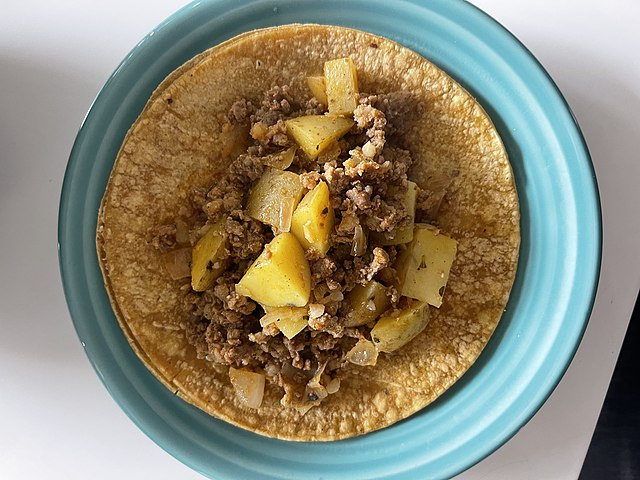

chorizo tacos
this is an easy one folks , don't worry

this image i used has potato as well , which sounds pretty good , might try that next time !
i had some of these bad boys in Mexico and i have been thinking about them since then .
i haven't been able to find any chorizo that's as good !
ingredients
- 1 chorizo sausage link , remove the casing and crumble the meat
- 2 tablespoons chipotle peppers in adobe sauce
- 4 corn tortillas
- 2 tablespoons chopped onions
- 2 tablespoons chopped cilantro
- LIME
instructinos
- combine crumbled chorizo and chipotle peppers in adobo sauce in a bowl .
- heat a skillet over medium-high heat ; add chorizo mixture and cook until crisp , 5 to 7 minutes .
transfer to a plate , keep the grease in the skillet .
- heat tortillas in grease in the skillet over medium heat until warmed , 1 to 2 minutes per side .
stack 2 tortillas for each taco , then fill with chorizo , onion , and cilantro .
- apply lime as desired
- eat up , you deserve it !